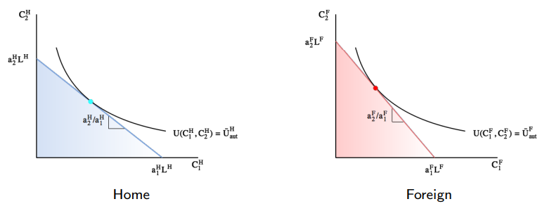
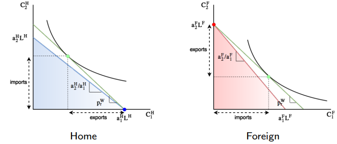
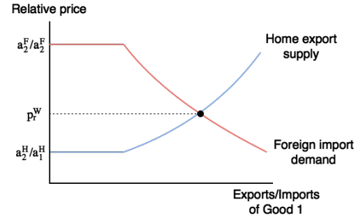

ECON2252 Lecture 3 (3)
Two-country Model
现在，就像我们在交换经济中讨论的那样，我们也想看看和大国贸易时，世界价格是如何被国家之间的贸易行为影响的。
就像之前做过的那样，我们引入一个新的大国 Foreign，它的假设均与 Home 相同，除了：
- Foreign 拥有劳动力禀赋 LF ；
- 边际劳动产出 a1F, a2F ；
我们假设，a1H/a2H > a1F/a2F ，即 Home 在生产商品 1 和 2 方面的表现相对优于 Foreign。
在自给自足下，两国的均衡为：

现在，假设两国之间允许交易。我们分析的关键在于理解此时的比较优势含义。
在上节中，我们知道一个国家在一种商品上拥有比较优势等价于它的自给自足相对价格低于世界相对价格。
在封闭经济中，自给自足相对价格取决于相对劳动边际产出的倒数
$$\begin{align} & p_r^H=\frac{a_2^H}{a_1^H} \\ & p_r^F=\frac{a_2^F}{a_1^F} \end{align}$$
而在两国模型中，比较优势则等价于一国拥有相比另一国更高的相对边际劳动产出。
这很好理解：更低的自给自足相对价格 ≈ 商品相对不那么稀缺。只不过现在商品的珍稀程度取决于生产技术而不是商品禀赋。
Will the countries trade?
在 SOE 分析中，我们知道：
- 如果 $p_r^W>\frac{1}{a_r^H}$ ，Home 就会出口商品 1 ，进口商品 2 ；
- 如果 $p_r^W<\frac{1}{a_r^H}$ ，Home 就会出口商品 2 ，进口商品 1 ；
同时，在我们的假设中， arH > arF 。因此，我们还是和之前一样，分情况分析。
Case 1: $\frac{1}{a_r^H}<\frac{1}{a_r^F}<p_r^W$
我们看到，在这种情况下，两国都出口商品 1 ，进口商品 2 . 也就是两国都专心生产商品 1 ，此时商品 2 的市场显然无法出清（供不应求）。
Case 2: $p_r^W<\frac{1}{a_r^H}<\frac{1}{a_r^F}$
我们看到，在这种情况下，两国都出口商品 2 ，进口商品 1 . 也就是两国都专心生产商品 2 ，此时商品 1 的市场显然无法出清（供不应求）。
Case 3: $\frac{1}{a_r^H}<p_r^W<\frac{1}{a_r^F}$
我们看到，在这种情况下，Home 专心生产商品 1 ，Foreign 专心生产商品 2 ，这样两国之间的贸易就有可能了。
Case 4: $\frac{1}{a_r^H}=p_r^W<\frac{1}{a_r^F}$
我们还需要注意的是，有可能出现不完全专业化的情况。在这种情况下，我们看到，Home 同时生产两种商品，而 Foreign 专心生产商品 2 ，此时贸易也是有可能的。
Case 5: $\frac{1}{a_r^H}<p_r^W=\frac{1}{a_r^F}$
在这种情况下，我们看到，Home 专心生产商品 1 ，而 Foreign 同时生产两种商品，此时贸易也是有可能的。
Who will trade what?
通过上述对贸易发生场景的分析，我们得出结论：无论何时，国家总是出口它们拥有比较优势的产品。
还记得我们之前的假设吗？我们假设
$$ \frac{a_1^H}{a_2^H} > \frac{a_1^F}{a_2^F} $$
以商品 1 为例，我们知道，由于 a1 代表的是边际劳动产出，也就是 1 单位的劳动力可以生产 a1 单位的商品 1 ；反过来，1 单位的商品 1 就需要 $\frac{1}{a_1}$ 单位的劳动力。
设想如果我们把这些劳动力全部投入产业 2 中，那么我们就能得到 $a_2 \times \frac{1}{a_1}=\frac{a_2}{a_1}$ 单位的商品 2 . 因此，$\frac{a_2}{a_1}$ 实际上就代表了生产商品 1 的机会成本，也就是如果我们生产1 单位的商品 1 ，就等于放弃了 $\frac{a_2}{a_1}$ 单位的商品 2 .
那我们再回头来看这个式子 $\frac{a_1^H}{a_2^H} > \frac{a_1^F}{a_2^F}$ ，这个式子可以化成
$$ \frac{a_2^H}{a_1^H} < \frac{a_2^F}{a_1^F} $$
也就是说，Home 生产商品 1 的机会成本小于 Foreign 。因此：
- Home 会生产商品 1 ，并出口商品 1 给 Foreign；
- Foreign 会生产商品 2 ，并出口商品 2 给 Home；
要注意，贸易模式并不取决于绝对优势。我们可以看一个例子：
$$\begin{align} a_1^H=100 \enspace &\enspace a_2^H=100 \\ a_1^F=1 \enspace &\enspace a_2^F=1 \end{align} $$
在这个例子中，我们看到 Home 在两种商品的生产上相对 Foreign 都有绝对优势。
但是，我们注意到 $\frac{a_1^H}{a_2^H} = \frac{a_1^F}{a_2^F}=1$ ，也就是说，两国的比较优势是没有差异的，所以它们并不能从贸易中获益。
同时也要注意，贸易模式也并不取决于劳动禀赋 LH, LF。
Which country will gain/lose from trade?
在 SOE 分析中，我们得出的结论是：只要相对价格和自给自足下的相对价格不同，国家就能从贸易中获益。
所以，我们很轻松地就能在两国模型下得出类似的结论：Home 和 Foreign 都可以从贸易中获益。计算过程和 SOE 是相同的。
不过，我们还关心另一件事情，贸易会影响 Home 中的实际工资吗？
我们从前面的分析中知道，Home 专心生产商品 1 ，此时零利润条件要求
$$ \frac{w^H}{p_1^W}=a_1^H $$
由于 a1H 是不变的，所以 Home 的商品 1 实际工资与自给自足是相同的。
那 Home 商品 2 的实际工资呢？我们可以把商品 2 的实际工资化作
$$\begin{aligned} \frac{w^H}{p_2^W}=\frac{w^H}{p_1^W}\cdot\frac{p_1^W}{p_2^W}=(\frac{w^H}{p_1^W})p_r^W \end{aligned} $$
然后将 $\frac{w^H}{p_1^W}=a_1^H$ 代入上式，得到
$$ \frac{w^H}{p_2^W}=a_1^Hp_r^W $$
我们知道，因为 Home 此时专心生产商品 1 ，所以世界相对价格必须满足
$$ p_r^W>\frac{a_2^H}{a_1^H}=p_r^H $$
将这个不等式代入，就可以得到
$$ \frac{w^H}{p_2^W}=a_1^Hp_r^W>a_2^H $$
所以，Home 的商品 2 实际工资相比自给自足是增加的。
对于 Foreign，情况就反过来：商品 1 的实际工资增加，商品 2 的实际工资不变。
How much will be traded and at what prices?
出口的供应和进口需求都取决于世界相对价格 prW。

当 prW 从 $\frac{1}{a_r^H}$ 增加到 $\frac{1}{a_r^F}$ 时，
- Home 增加商品 1 的出口，商品 2 的进口；
- Foreign 增加商品 2 的出口，商品 1 的进口；
至于 prW ，它一定要使得出口供给等于进口需求。以商品 1 的市场为例：

总之，为了得出贸易量和贸易价格，我们要做的就是解决平衡条件（equilibrium conditions）。
Empirical Evidence: RCA
我们在之前的分析中反复提到了比较优势这个概念，即两国之间的相对优势：
$$ \frac{a_1^H}{a_2^H} > \frac{a_1^F}{a_2^F} $$
但在实践中，我们常常对衡量一个国家在某种商品上相对于世界其他地区的比较优势感兴趣。为了研究与国家在全球经济中的平均表现相比，该国在某个产品上有多”专注”，我们引入了一个新的概念——显性比较优势（Revealed Comparative Advantage, RCA），公式如下
$$ RCA_{A_i}=\frac{\frac{X_{A_i}}{\sum_{j \in P}X_{A_j}}}{\frac{X_{w_i}}{\sum_{j \in P}X_{w_j}}}\ge 1 $$
其中
- P ：所有产品的集合；
- $\frac{X_{A_i}}{\sum_{j \in P}X_{A_j}}$ ：产品 i 在 A 国总出口中的占比，衡量了A国经济对产品i的依赖程度。
- $\frac{X_{w_i}}{\sum_{j \in P}X_{w_j}}$ ：产品 i 在全球总出口中的占比，衡量了该产品在全球贸易中的普遍程度。
如果
- RCA >
1：该国在产品i上具有显性比较优势；
- 意味着该国在该产品上的专业化程度高于全球平均水平；
- 通常认为这是该国具有比较优势的证据；
- RCA <
1：该国在产品i上具有显性比较劣势；
- 意味着该国在该产品上的专业化程度低于全球平均水平；
- RCA = 1：该国在产品i上的表现与全球平均水平相当；
RCA 的意义在于，李嘉图的比较优势理论基于劳动生产率（ai），但在现实中很难获得所有国家所有产品的劳动生产率数据。RCA通过观察实际的贸易模式来”揭示”比较优势，绕过了这个数据难题。